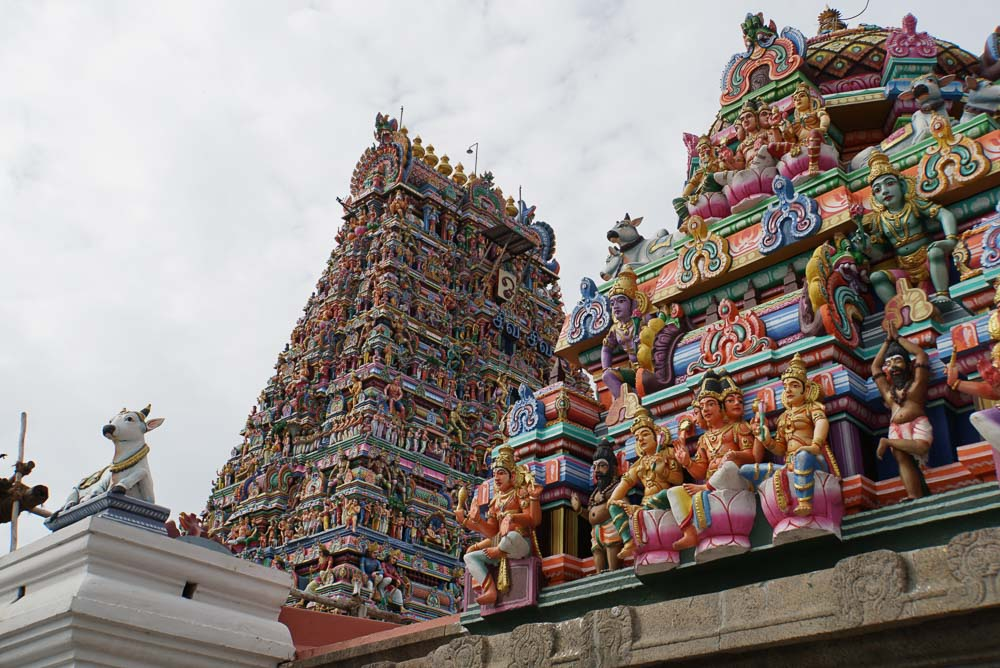
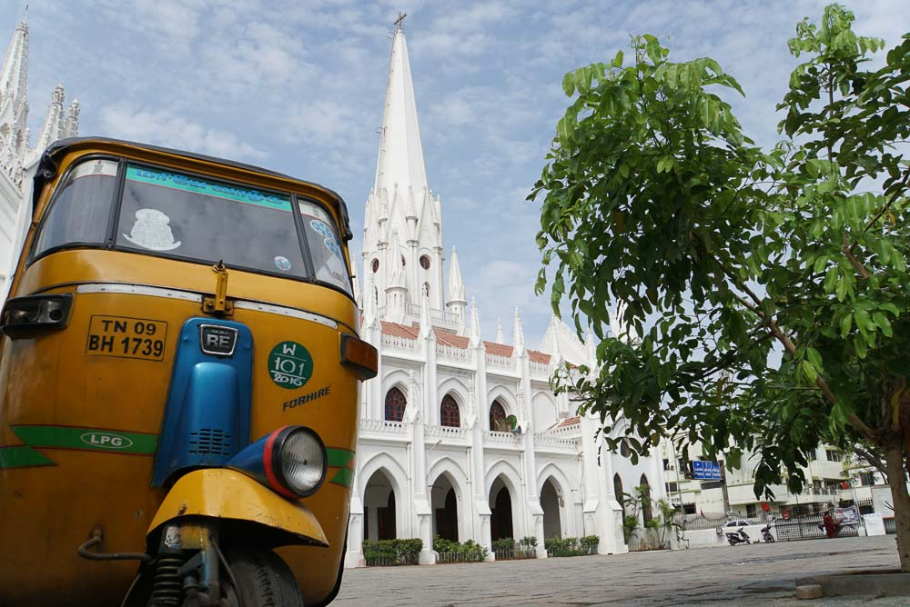
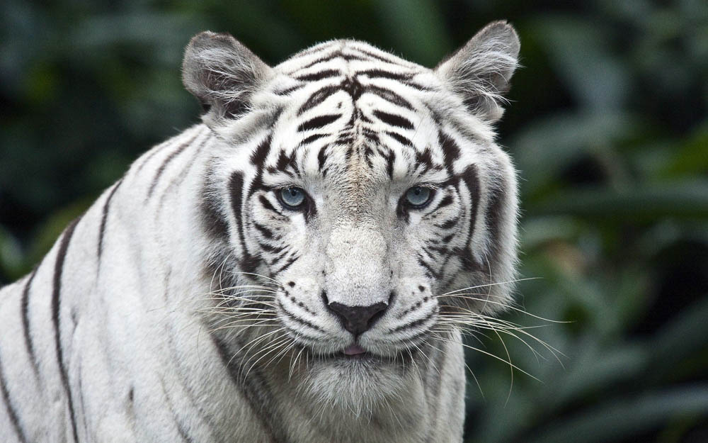
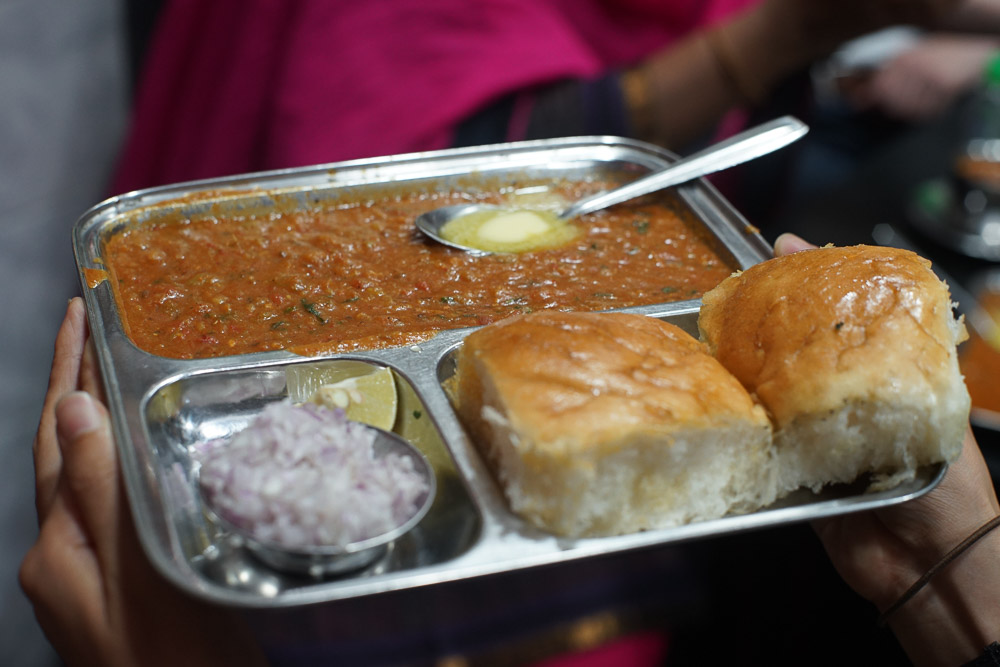
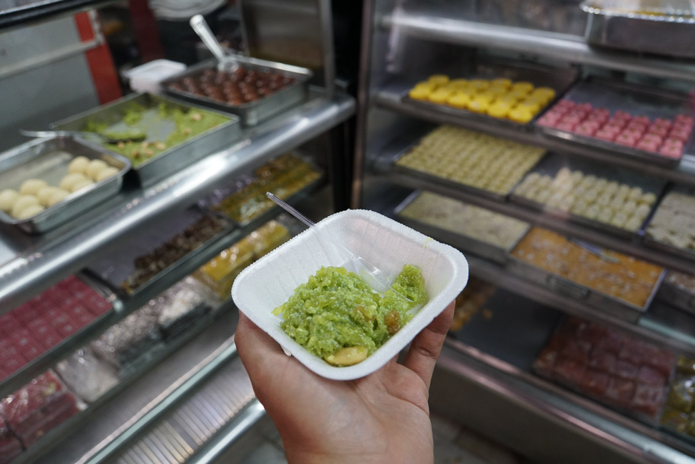

Chennai

Chennai, the capital city of the state of Tamil Nadu is spread across an area of around 1189 square kilometers on the Eastern Coastal Plains. The city has two major rivers flowing through it, the Cooum or Koovam River through the center and the Adyar River to the south. The city has a coastline spreading across around 25 km.
As the 4th largest city in India, and the commercial soul of South India, Chennai is one of India’s safest cities, and was recently included in BBC’s list of Top 52 countries to live in. It is said to be a city full of old tales and modern trails.
Things to do in Chennai
Uncover the tales behind the rituals of Kapaleeshwarar Temple
Hindus form up the bulk of Chennai’s population and it is natural to see many Hindu temples across the city. Situated in Mylapore, stands the colorful 1,400-year-old Kapaleeshwar Temple, one of the oldest temples in Chennai devoted to Shiva worshippers. The name Mylapore means peacock. Legend has it that the Goddess Uma worshipped Shiva in the form of a peacock. As a sign of respect, visitors to the temple need to remove footwear before entering the temple through the colourful gate structures known as Gopuram.
The Santhome Cathedral Basilica Church

Just half a mile away from the Kapaleeshwarar Temple stands the Santhome Cathedral Basilica Church
. There are only three churches built over the tomb of an Apostle of Jesus Christ — St. Peter in Vatican City, St. James in Compostila Spain, and St. Thomas in Chennai.
Visit one of South East Asia’s largest Zoos

The Vandalur Zoo, a.k.a Arignar Anna Zoological Park, is India’s first and largest Zoo! The zoo has multiple sections that are laid out to ensure the animals live as close to their natural environment as possible. Who needs cat cafes when you get to see the real deal in Chennai!
Many travel from across India to the Vandalur Zoo just to see the mystical White Tigers. They tend to sit in a really elegant manner, as if they’re the Maharajahs (kings) of the zoo. If you’re a cat lover, you can also get up close and personal with the other top cats at the Lion Safari where the feisty felines roam freely around a 20 hectare forested area – all from the safety of a caged bus of course. You can even visit bambi’s friends at the deer safari park. There’s also a chimpanzee and ostrich enclosure.
What to eat in Chennai?
Pav Bhaji

This is easily one of our favourites that got us searching for it in every other city we travelled to. “Pav” means bread, which in this case it is a fried, yet soft buttery roll that is perfect to soak up the goodness of the gravy. This gravy is known as “Bhaji” – a thick vegetable curry prepared with a dollop of butter. We were given sides of onions and lime to mix into the curry to give it that added kick! Still longing for it right now…
The best place to have it is at The Novelty Tea House – the birthplace of Pav Bhaji.
Dudhi Halwa

For those with a sweet tooth, this sweet mixture of mashed bottle gourd cooked with milk and seasoned with cardamom, is to die for! It tastes even better when topped off with Chakkal Para, a crispy savoury biscotti.
Delish!
Murukku sandwich

Two mini murukkus (south-indian crackers made of deep-fried grain flour) sandwiching a refreshing coriander chutney with tomatoes and cucumber.
This is the latest rage in Chennai, and there are two flavors to choose from – one slightly spicy, and another with cheese.